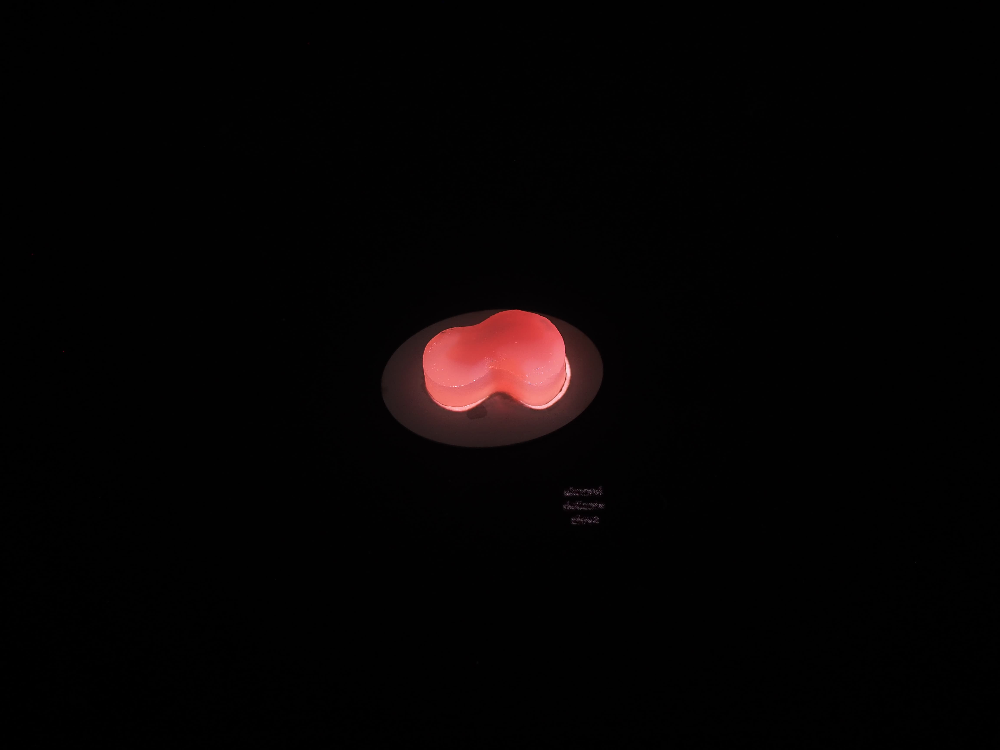
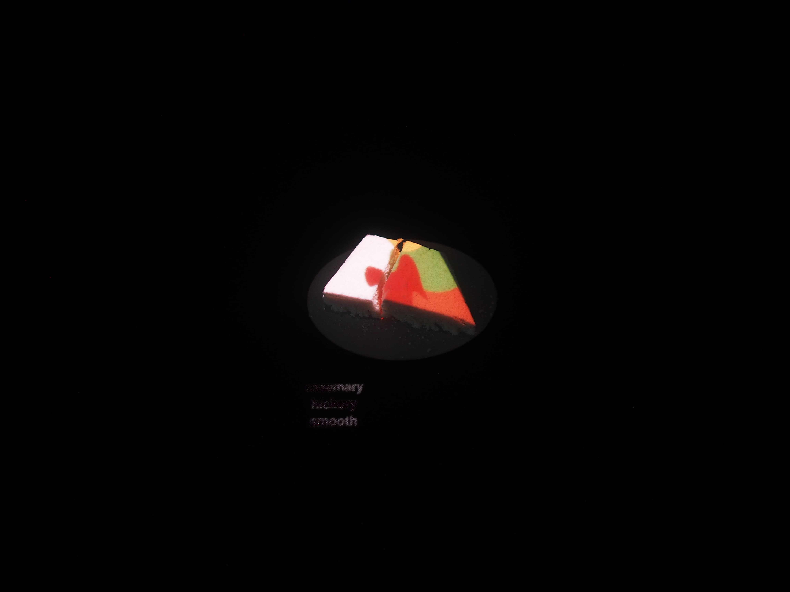
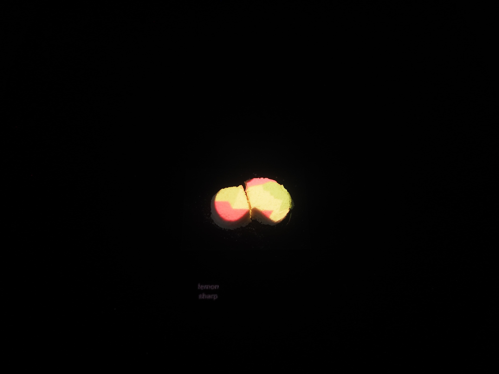
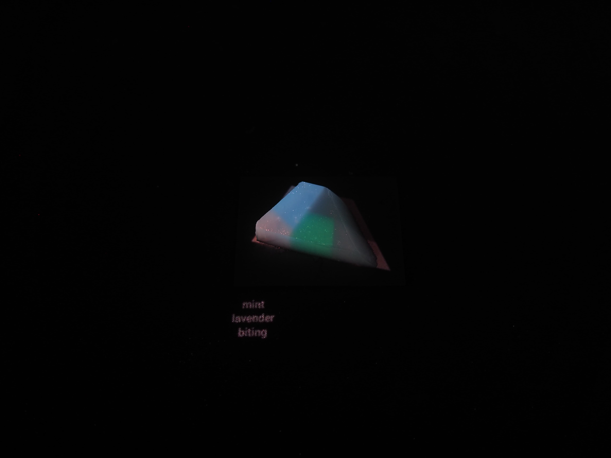

1 / 3

2 / 3

3 / 3

An investigation into how the other senses (sight, sound, texture, smell) can affect taste. bitter, umami, sour, and sweet.
Each taste, accompanied by corresponding music, shape, and colors, was projected upon a flavorless jelly or rice cake. The participant was asked to taste the food whilst listening to music, smelling a scent through a diffuser, and looking at textual descriptors.
Based on psychology research by Charles Spence.
For a “sweet” taste, the subject saw hues of red projected onto a white, organically-shaped piece of rice cake which was placed on a white circle. For sound, a light string melody was played and the subject smelled a combination of almond and frankincense through a diffuser. All of these sensory elements, which corresponded with general perceptions of sweetness, were designed to influence the subject’s tasting of a piece of tasteless food.
click on image to play corresponding sound sound
savory
sour
bitter
